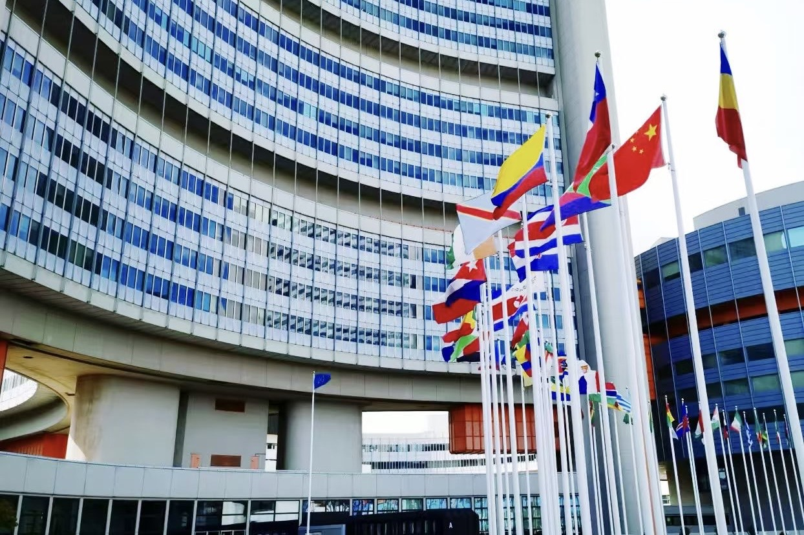
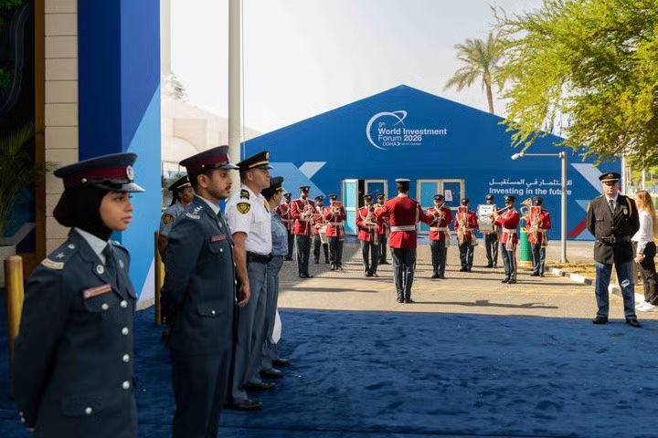
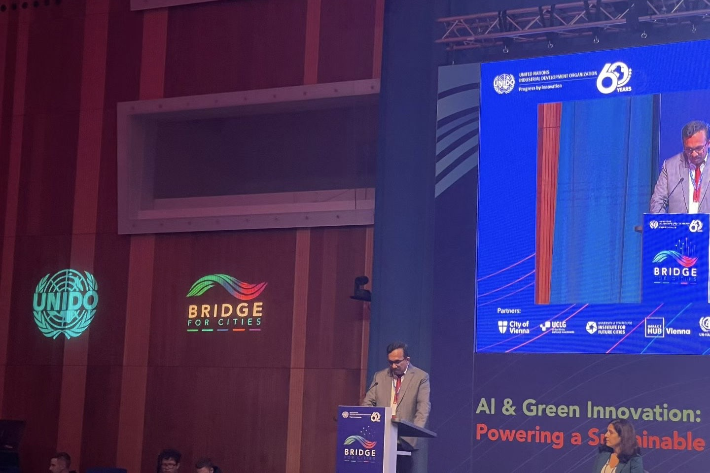
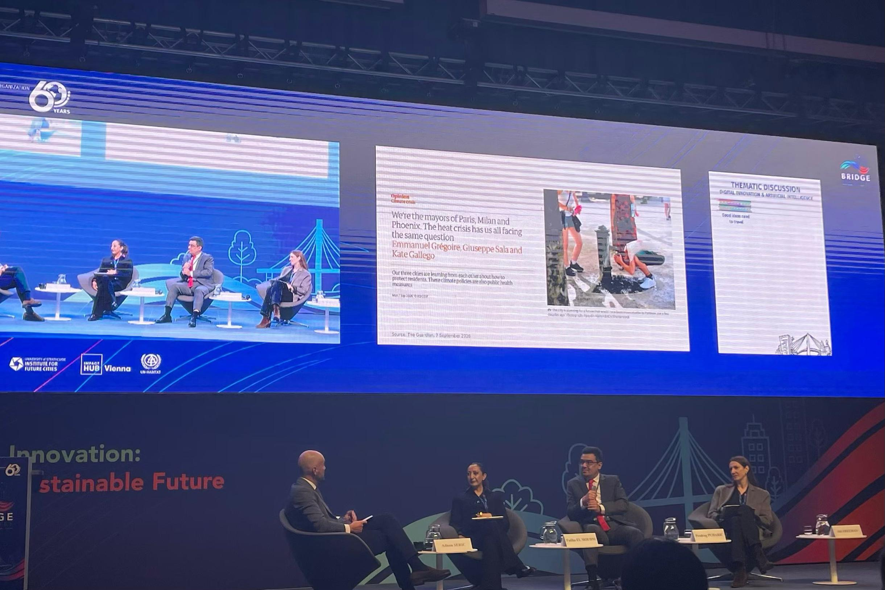
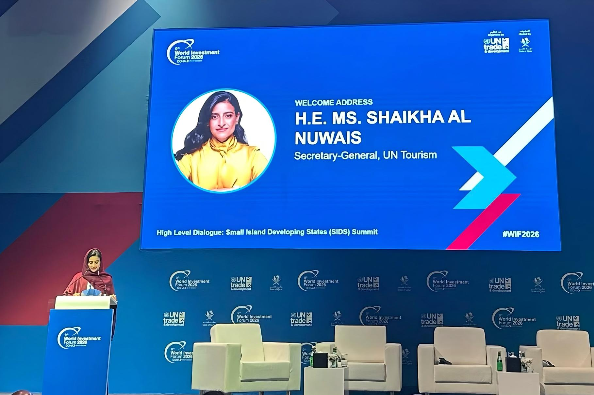

GYDA Engages with UNCTAD WIF 2026 and UNIDO Bridge for Cities 2026
Connecting Global Investment, Sustainable Cities and Youth Innovation from Doha to Vienna

Location
Doha, Qatar
Vienna International Centre, Vienna, Austria
Date
October 24–30, 2026
Global Youth Development Alliance (GYDA) Executive Director Allan Han attended, by invitation, the pre-opening networking reception of the ninth World Investment Forum (WIF 2026), organized by the United Nations Conference on Trade and Development (UNCTAD), and subsequently participated in Bridge for Cities 2026, hosted by the United Nations Industrial Development Organization (UNIDO) in Vienna.
The two events took place between October 24 and 30, 2026, in Doha and at the Vienna International Centre, respectively. The former focused on the global investment and innovation agenda, while the latter addressed artificial intelligence, green innovation and sustainable urban transformation.
GYDA representatives engaged in exchanges with dignitaries from various countries, leaders of international organizations, city officials and industry researchers, focusing on developments in investment policy, digital transformation and urban decarbonization within multilateral frameworks.
I. Two Multilateral Platforms for Investment and Sustainable Urban Development
1. UNCTAD World Investment Forum 2026
The ninth World Investment Forum was organized by the United Nations Conference on Trade and Development (UNCTAD) and hosted by the State of Qatar. Held in Doha from October 25 to 27, 2026, under the theme "Investing in the Future", the Forum featured 114 sessions, eight thematic tracks and 431 speakers over three days, preceded by an arrival day on October 24.
Since its inaugural edition in Accra, Ghana, in 2008, the World Investment Forum has developed over eighteen years into a major international platform for investment and development dialogue. Doha hosted the Forum for the second time in 2026, following its third edition in 2012.
The previous edition, held in Abu Dhabi in 2023, attracted 8,000 participants and 700 corporate chief executives, highlighting the need to close the USD 4 trillion sustainable development investment gap. UNCTAD positions the Forum as a leading global platform connecting heads of state and government, ministers, business executives and investment institutions.
Sessions particularly relevant to youth and innovation included "Investing in AI for an Inclusive Digital Future", "AI Everywhere: Opportunity, Influence and Impact" (youth-led), "Investing in Future Communities: Youth Voices, Real Models" and "Future Business Leaders Dialogue".

2. UNIDO Bridge for Cities 2026

Bridge for Cities 2026 was hosted by the United Nations Industrial Development Organization (UNIDO) from October 28 to 30, 2026, in Building M of the Vienna International Centre, under the theme "AI & Green Innovation: Powering a Sustainable Future".
The eleventh edition brought together more than 500 urban stakeholders from over 80 countries and regions. The year 2026 also marked the 60th anniversary of UNIDO's founding. Over more than a decade, Bridge for Cities has served as UNIDO's flagship platform for dialogue on sustainable urban and industrial development.
Following the opening ceremony, UNIDO and United Cities and Local Governments (UCLG) signed a memorandum of understanding. The event also featured the launch of the Urban ScaleX Alliance and the release of a compendium of results.
These developments built on the October 2025 Xi'an Joint Statement and the organizations' existing cooperation through Bridge for Cities, strengthening international collaboration on sustainable urban transformation.
On the second day, two interactive sub-forums featured 13 mayors and city representatives sharing local practices and experiences. The exhibition area brought together four institutional partners — UCLG, the City of Vienna, UN-Habitat and the Future Cities Research Institute — alongside six private-sector entities.


II. GYDA's Role in Connecting Investment, Cities and Youth
UNCTAD's World Investment Forum provides a global platform for investment policy and capital mobilization, while UNIDO's Bridge for Cities facilitates multilateral dialogue and the exchange of local practices in urban and industrial transformation. Cities and youth communities worldwide provide practical application scenarios and identify capacity-building needs.
Within this broader landscape, GYDA seeks to provide an international organizational framework connecting these dimensions with global youth development and innovation.
GYDA's role is that of a long-term mechanism builder rather than an event organizer. Its focus is on translating dialogue and conference outcomes into sustainable channels for cooperation, enabling youth participation to gain greater visibility across both investment policy and urban governance.
GYDA's work is structured around five pillars: AI governance, digital youth leadership, regional innovation ecosystems, the youth multiplier model and digital inclusion.
Its programmes span more than 15 countries, with ongoing cooperation involving the International Telecommunication Union (ITU), the United Nations Educational, Scientific and Cultural Organization (UNESCO), the United Nations University (UNU) and other institutions.
The emphasis on human-centred artificial intelligence, transparent governance and inclusive innovation ecosystems across the two events closely aligns with GYDA's ongoing priorities, reinforcing the importance of connecting global policy dialogue with practical opportunities for young people.